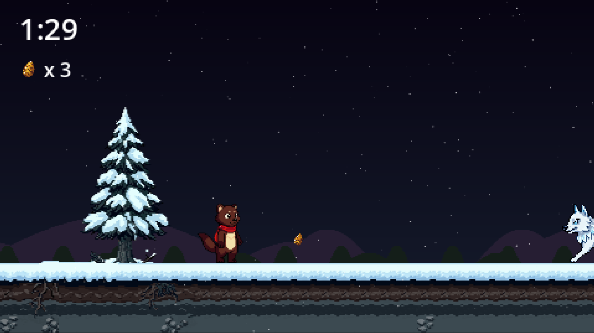
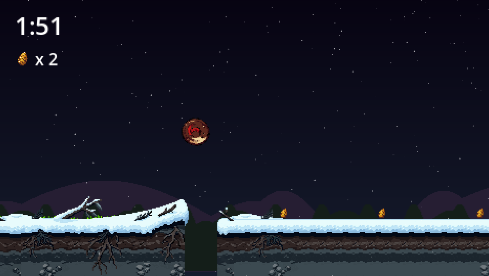
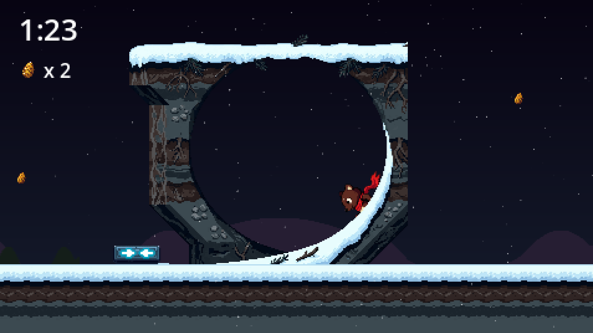
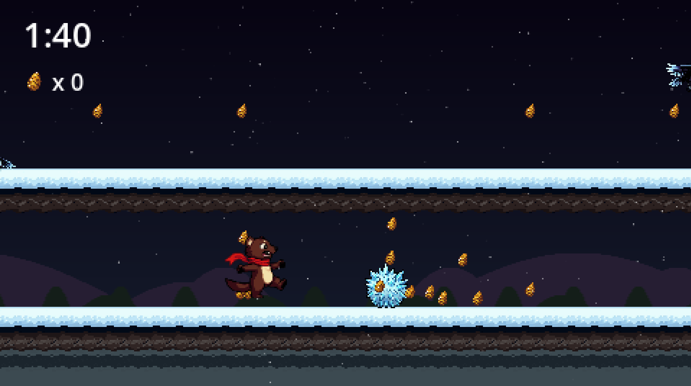
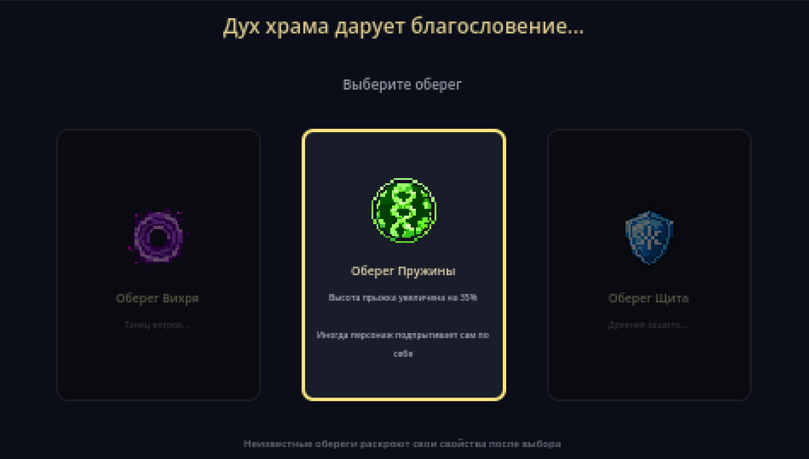

Platformer / Roguelite
2026 · Godot 4
Sonic-подобный 2D-платформер с roguelite-элементами в сеттинге мистической сибирской тайги, скованной Вечной Зимой. Игрок управляет соболем Эмбером — самым быстрым обитателем леса, которому духи тайги доверили доставить Семена Весны в древние Храмы и победить духа холода Стужу. Ключевая инновация — система магических Оберегов с двойным эффектом (положительным и негативным), создающая уникальный опыт каждого прохождения.
Создать динамичный 2D-платформер, объединяющий проверенную формулу классических скоростных платформеров с современными roguelite-механиками, обеспечивающими высокую реиграбельность.
Разработан играбельный прототип с несколькими уровнями, полностью функциональной механикой персонажа (Spin Dash, двойной прыжок, система шишек), системой Оберегов, пятью типами врагов и боссом. Проект является дипломной работой автора.




